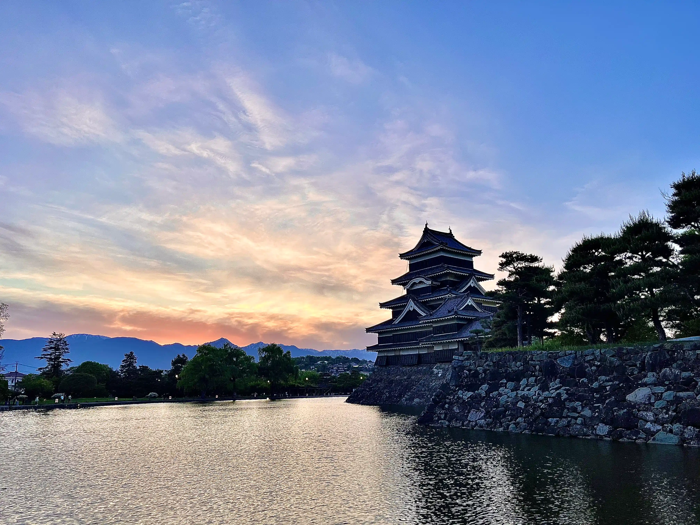

את התמונה של הפוסט צילמנו במצומטו, עיירה קסומה שממנה בעצם יצאנו לטיולי כוכב. בעיקרון, מצומטו היא לא העיירה האידיאלית לצאת ממנה לעמק הקיסו ויותר נוח להגיע לשם מנאגויה, אבל בגלל שלא רצינו כל לילה לעבור מלון ולהתעסק עם שליחת מזוודות החלטנו ללון בה 3 לילות.
לינה
אם אתם מגיעים למצומטו ועושים את המסלול טיול שלנו חובה לישון צמוד לתחנת רכבת המרכזית, היינו 2 דקות הליכה ממנה וזה ממש הקל עלינו, קוראים למקום premier hotel cabin matsumoto, עלה 235₪ ללילה
חשוב לציין שאם אתם מוותרים על עמק הקיסו אבל רוצים להגיע לקמיקוצ'י ולמסלול האלפיני יותר מומלץ ללון בטקיאמה.

עמק הקיסו הפך לשם נפוץ של מקטע משביל יפן- הנקסנדו (כמו שביל ישראל) שמתחיל מעיירת magome שהיא חמודה בטירוף, וממשיכה למסלול טיול שמשלב נופים, יער, מפלים, בית תה, קצת הליכה בכביש ובסוף מגיעים ל- tsumago, עיירה דומה למגומה ומאוד חמודה.
סה"כ 8 ק"מ הליכה מתחיל בעלייה 2 ק"מ ואז כל השאר זה ירידה, מסלול די קליל ומגניב להרגיש שעשית חלק משביל יפן.
אנחנו הגענו לשם דרך מטסומוטו וזאת הייתה נסיעה של שעתיים ברכבת לטסומאגו ועוד שעה באוטובוס למאגומה- תחילת המסלול (בערך 2600 יין), את המסלול סיימנו בטסומאגו אז החזור היה נסיעה קצרה באוטובוס שאפשר לעשות גם ברגל(30-40 דק') ושעתיים ברכבות.
כמובן שאם יש לכם רכב זה מאוד מקל, אתם כן תצטרכו לקחת אוטובוס פעם אחת מכיוון שהמסלול לא מעגלי.

קמיקוצ'י היא שמורת טבע שנמצאת באלפים היפניים, בה יש מסלולים עם נופים מרהיבים, השמורה מאוד מתוירת כי המסלולים מאוד קלים אבל הנוף מצדיק את זה.
ממצומטו יש קו אוטובוס ישיר במחיר משתנה(4000-700 יין) אבל צריך להזמין אותו מראש, אנחנו הגענו וכבר היה סולד אאוט ליום למחרת(שהיה שמש), כן היו כרטיסים ליומיים אחרי אבל זה היה יום מעונן אז יכול להיות שזאת הסיבה שעוד היו כרטיסים.
את הכרטיסים אפשר לקנות ב-Japan Bus Online אבל יש אופציה לקו ישיר רק לכיוון קמיקוצ'י ואין אופציה לקו הישיר בחזרה למצומטו.
אנחנו נסענו ברכבות ועלה 3,500 יין לכיוון, את הכרטיסים קונים במכונה קצת מסובכת בתחנת הרכבת ולא דרך suica אז תגיעו 20 דק לפני הקו שלכם שלא תפספסו אותו.
בקמיקוצ'י יש אופציות למספר מסלולים שונים, זה המסלול שאנחנו עשינו ואנחנו מאוד ממליצים עליו.
רדו בתחנת האוטובוס של taisho pond- שזו גם לדעתינו הנקודה הכי יפה במסלול.
תמשיכו צפונה עד myojin bridge
חזרו דרומה דרך הצד השני של הנהר לkappa bridge, שם גם נמצא טרמינל האוטובוסים, כל המסלול יוצא 10 ק"מ.
יש גם אופציה להאריך את המסלול ולהמשיך צפונה אחרי myojin bridge לעוד 3 ק"מ ואז לחזור ובכך להאריך את המסלול ב6 ק"מ, או לחילופין לוותר על myojin bridge וללכת מtaisho pond ישירות לטרמינל האוטובוסים.
שימו לב מי שמגיע עם רכב, אין כניסה עם רכבים לתוך השמורה ותצטרכו להחנות מחוץ לה ולקחת אוטובוס פנימה.
בנוסף בחזור צריך לקנות את הכרטיס חזרה למצומטו בטרמינל אוטובוסים שנמצא ליד kappa bridge. כשסיימנו את המסלול החלטנו לשבת ולהינות מהנוף ועד שהגענו לטרמינל כבר נגמרו הכרטיסים לאוטובוס הקרוב והיינו צריכים לחכות עוד בערך 40 דק לאוטובוס הבא. תלמדו מהטעות שלנו וכשאתם מסיימים את המסלול לכו לקנות כרטיס ואז לכו ליהנות מהנוף.